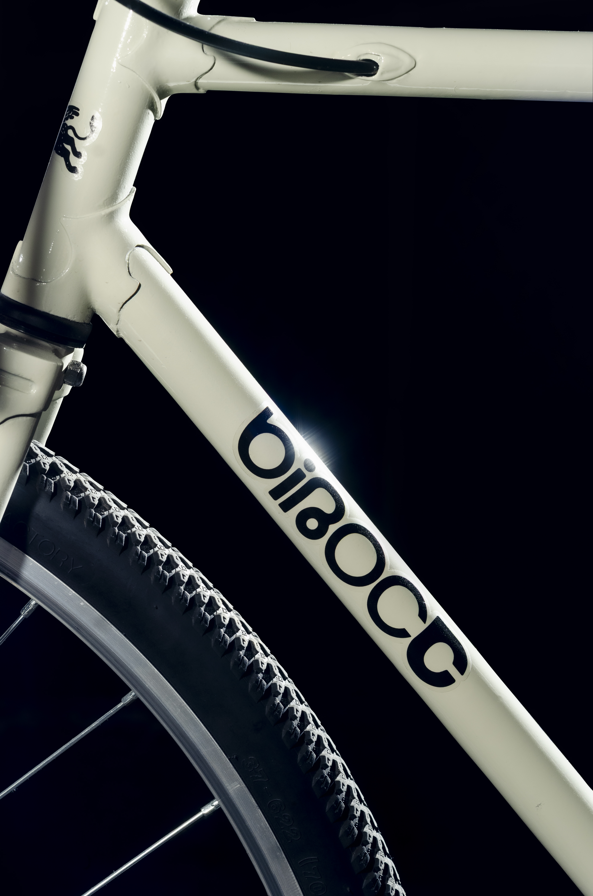
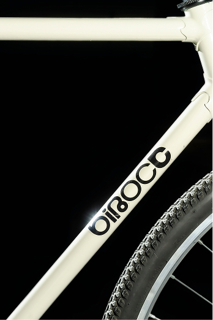
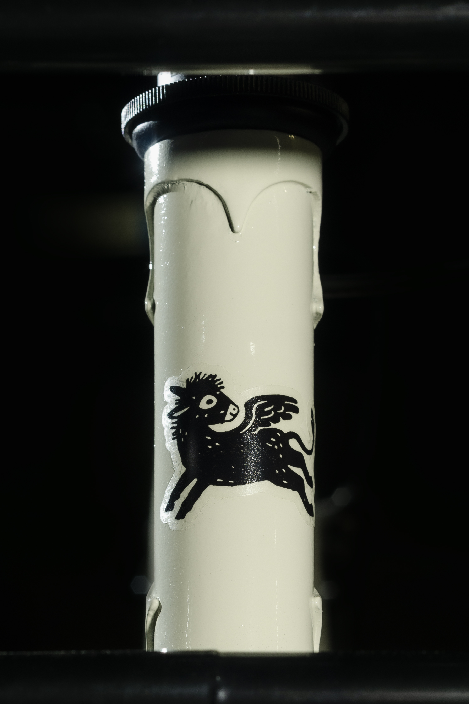
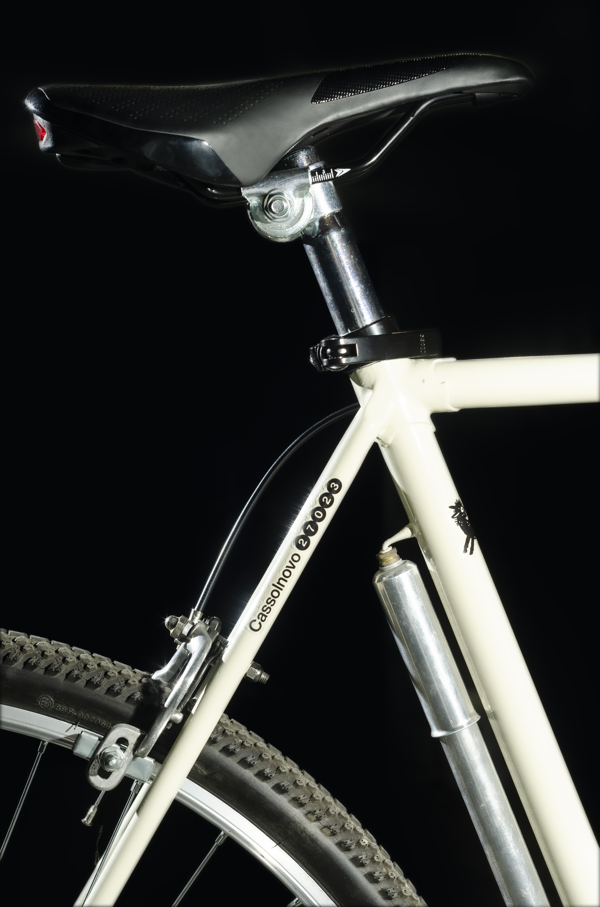
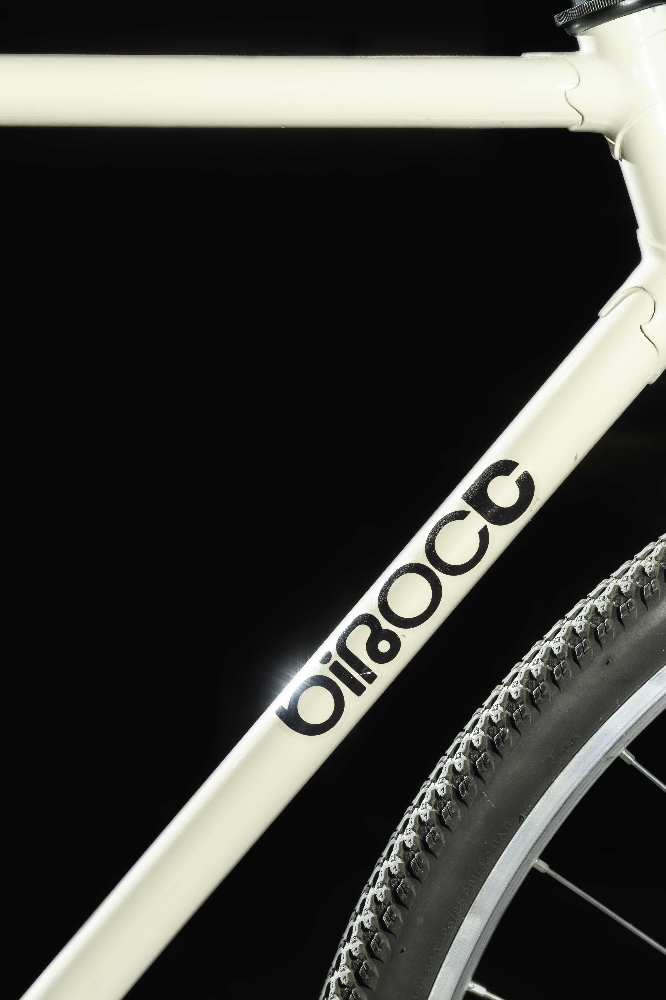

Birocc was born from the idea of combining reclaimed frames with carefully selected components. The name, derived from the Lomellino dialect, refers to a two-wheeled cart and, with a touch of irony, something a bit shaky. The project, photographed by Pietro Aguzzi, uses the Mario Sans font designed by ATIO.
Birocc was born from the idea of combining reclaimed frames with carefully selected components. The name, derived from the Lomellino dialect,
refers to a two-wheeled cart and, with a touch of irony, something a bit shaky. The project, photographed by Pietro Aguzzi,
uses the Mario Sans font designed by ATIO





